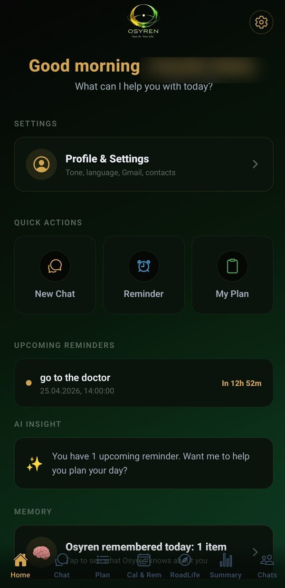
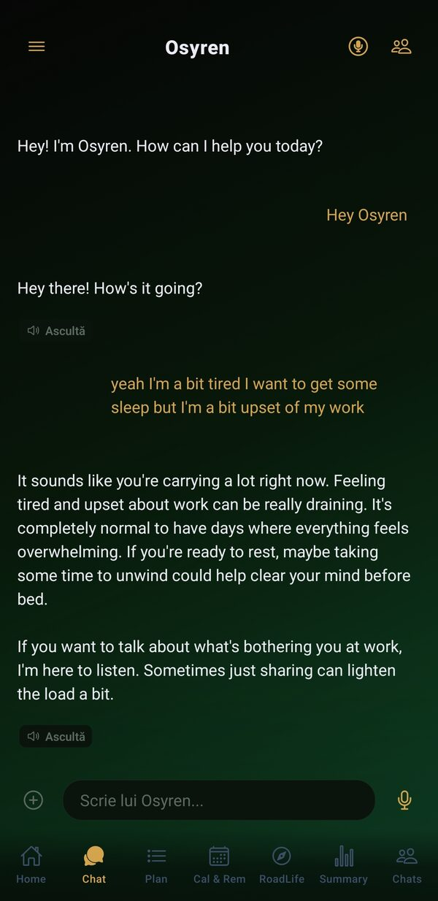
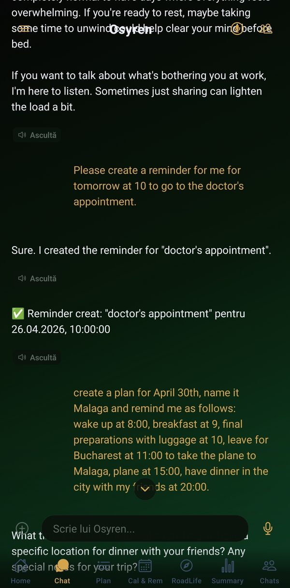
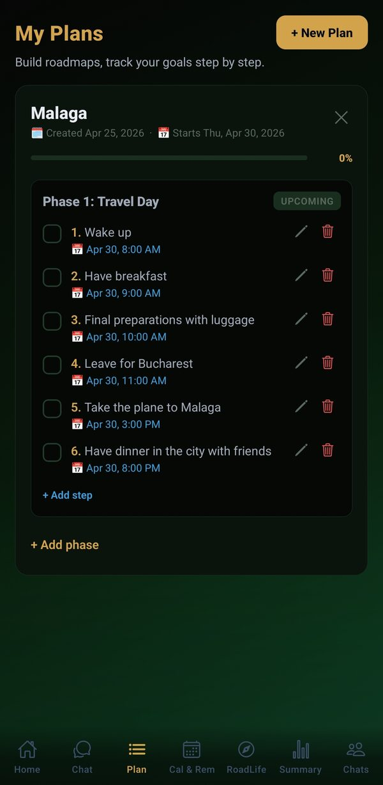
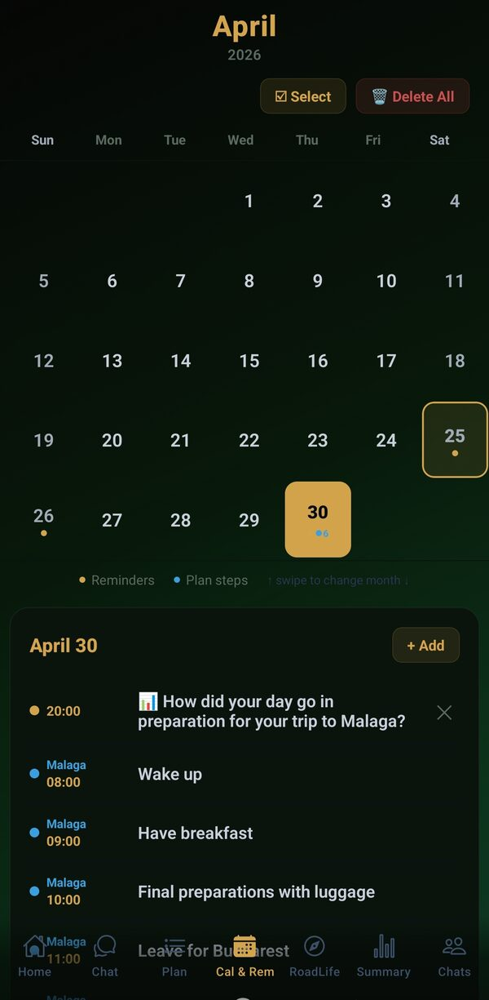
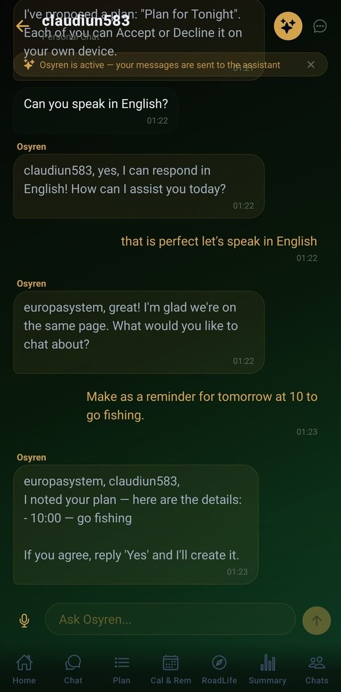
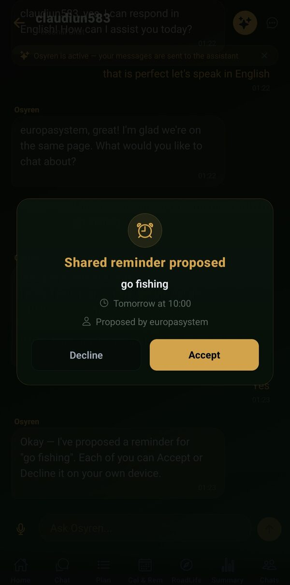
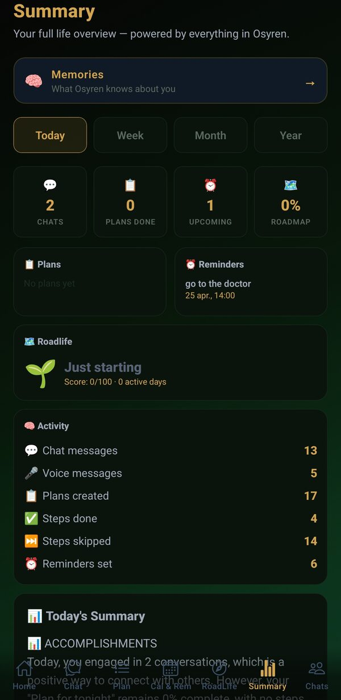
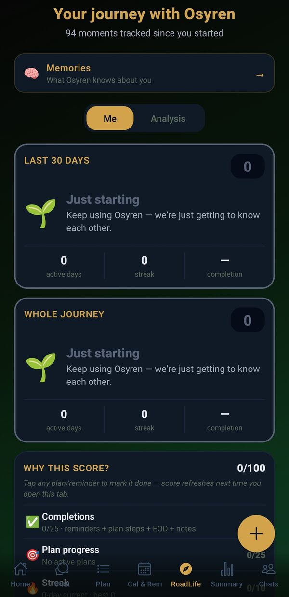
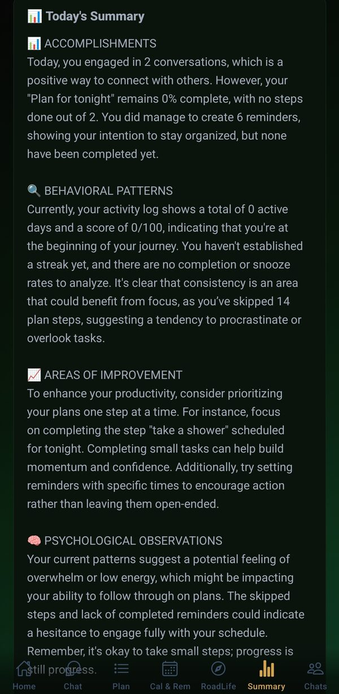

Osyren turns your goals into clear steps, reminds you what truly matters, and learns how you live — so it can support you exactly when you need it. Osyren îți transformă obiectivele în pași clari, îți reamintește ce contează cu adevărat și învață cum trăiești — ca să te sprijine exact când ai nevoie. Osyren trasforma i tuoi obiettivi in passi chiari, ti ricorda ciò che conta davvero e impara come vivi — per supportarti esattamente quando ne hai bisogno. Osyren convierte tus objetivos en pasos claros, te recuerda lo que realmente importa y aprende cómo vives — para apoyarte exactamente cuando lo necesitas.

From big goals to small daily reminders — Osyren weaves everything you need into one natural flow to keep your life aligned. De la obiective mari la mici reminder-e zilnice — Osyren integrează într-un flux natural tot ce ai nevoie să-ți ții viața aliniată. Dai grandi obiettivi ai piccoli promemoria quotidiani — Osyren intreccia tutto ciò di cui hai bisogno in un flusso naturale per mantenere la tua vita allineata. Desde grandes objetivos hasta pequeños recordatorios diarios — Osyren teje todo lo que necesitas en un flujo natural para mantener tu vida alineada.
Speak naturally in any supported language. Osyren understands, responds, and reads the answer back if you want. No rigid commands. Vorbește natural în orice limbă. Osyren înțelege, răspunde și rostește răspunsul dacă vrei. Fără comenzi rigide. Parla naturalmente in qualsiasi lingua supportata. Osyren capisce, risponde e legge la risposta ad alta voce se vuoi. Nessun comando rigido. Habla con naturalidad en cualquier idioma compatible. Osyren entiende, responde y lee la respuesta en voz alta si quieres. Sin comandos rígidos.
Snap a photo of a reservation, ticket, or receipt. Osyren reads it instantly and creates the right reminders for you — no typing. Fă o poză la o rezervare, bilet sau chitanță. Osyren o citește instant și creează reminder-ele potrivite — fără să mai scrii nimic. Scatta una foto di una prenotazione, un biglietto o una ricevuta. Osyren la legge all'istante e crea i promemoria giusti per te — senza digitare. Saca una foto de una reserva, un billete o un recibo. Osyren lo lee al instante y crea los recordatorios adecuados — sin teclear nada.
Tell it where you want to go. Osyren builds the path — clear steps, deadlines, and tracking, ready to start. Spune-i unde vrei să ajungi. Osyren îți construiește drumul — pași clari, cu termene și urmărire, gata de început. Digli dove vuoi arrivare. Osyren costruisce il percorso — passi chiari, scadenze e monitoraggio, pronti da iniziare. Dile a dónde quieres llegar. Osyren construye el camino — pasos claros, plazos y seguimiento, listos para empezar.
"Remind me Monday at 8 to call the doctor." Osyren understands natural language and keeps you accountable with notifications. „Amintește-mi luni la 8 să sun la medic." Osyren înțelege limbajul natural și te ține responsabil cu notificări. «Ricordami lunedì alle 8 di chiamare il medico.» Osyren capisce il linguaggio naturale e ti tiene responsabile con le notifiche. «Recuérdame el lunes a las 8 llamar al médico.» Osyren entiende el lenguaje natural y te mantiene responsable con notificaciones.
1-on-1 or in a group. Plans and reminders sync to everyone involved — across all their devices, in real time. 1 la 1 sau în grup. Planurile și reminder-ele se sincronizează la toți participanții — pe toate dispozitivele, în timp real. A tu per tu o in gruppo. Piani e promemoria si sincronizzano con tutti i partecipanti — su tutti i loro dispositivi, in tempo reale. Cara a cara o en grupo. Los planes y recordatorios se sincronizan con todos los participantes — en todos sus dispositivos, en tiempo real.
Send SMS, WhatsApp, Telegram, or email straight from the chat. No app-switching, no copy-paste. Trimite SMS, WhatsApp, Telegram sau email direct din chat. Fără să mai treci de la o aplicație la alta. Invia SMS, WhatsApp, Telegram o email direttamente dalla chat. Nessun cambio di app, nessun copia-incolla. Envía SMS, WhatsApp, Telegram o correos directamente desde el chat. Sin cambiar de app, sin copiar y pegar.
Analyze contracts, receipts, or CVs. Generate reports, summaries, and documents ready to send — all from one conversation. Analizează contracte, chitanțe sau CV-uri. Generează rapoarte, sumare și documente gata de trimis — tot dintr-o conversație. Analizza contratti, ricevute o CV. Genera report, riassunti e documenti pronti da inviare — tutto in un'unica conversazione. Analiza contratos, recibos o CVs. Genera informes, resúmenes y documentos listos para enviar — todo desde una sola conversación.
Your long-term direction, visualized. What you've done, where you are, where you're heading — in a clear picture. Direcția ta pe termen lung, vizualizată. Ce ai făcut, unde ești, unde te îndrepți — într-o imagine clară. La tua direzione a lungo termine, visualizzata. Cosa hai fatto, dove sei, dove stai andando — in un'immagine chiara. Tu dirección a largo plazo, visualizada. Lo que has hecho, dónde estás, a dónde te diriges — en una imagen clara.
English, Romanian, Italian, Spanish — and more inside the app. Fluent switching between languages in the same conversation. Engleză, română, italiană, spaniolă — și altele în aplicație. Switch fluent între limbi în aceeași conversație. Inglese, rumeno, italiano, spagnolo — e altre ancora nell'app. Passaggio fluido tra le lingue nella stessa conversazione. Inglés, rumano, italiano, español — y más dentro de la app. Cambio fluido entre idiomas en la misma conversación.
Osyren picks up how you're feeling — empathy when you're tired, structure when you're overwhelmed. Ask for a reminder, a plan, a message; it creates them inside the same conversation. Osyren înțelege cum te simți — empatie când ești obosit, structură când ești copleșit. Cere un reminder, un plan, un mesaj; le creează în aceeași conversație. Osyren capisce come ti senti — empatia quando sei stanco, struttura quando sei sopraffatto. Chiedi un promemoria, un piano, un messaggio; li crea nella stessa conversazione. Osyren entiende cómo te sientes — empatía cuando estás cansado, estructura cuando estás agobiado. Pídele un recordatorio, un plan, un mensaje; los crea en la misma conversación.


Tell Osyren what you want — a trip, a project, a habit. It breaks it into clear phases and steps, each with its own date and reminder. Check off as you go. Spune-i lui Osyren ce vrei — o călătorie, un proiect, un obicei. Îl împarte în faze și pași clari, fiecare cu data și reminder-ul lui. Bifezi pe măsură ce avansezi. Di' a Osyren cosa vuoi — un viaggio, un progetto, un'abitudine. Lo suddivide in fasi e passi chiari, ciascuno con data e promemoria. Spunta man mano che avanzi. Dile a Osyren qué quieres — un viaje, un proyecto, un hábito. Lo divide en fases y pasos claros, cada uno con su fecha y recordatorio. Marca según avances.

Reminders, plan steps, and events — color-coded and visible at a glance. See the day you're planning, the trip coming up, the small things that matter. Reminder-e, pași din planuri, evenimente — color-coded, vizibile dintr-o privire. Vezi ziua pe care o planifici, călătoria care urmează, lucrurile mici care contează. Promemoria, passi dei piani, eventi — codificati a colori e visibili in un colpo d'occhio. Vedi la giornata che stai pianificando, il viaggio in arrivo, le piccole cose che contano. Recordatorios, pasos de planes y eventos — codificados por color y visibles de un vistazo. Ve el día que planificas, el viaje que viene, las pequeñas cosas que importan.

Invite someone into a chat. Propose a shared reminder or plan. They accept on their own device, and it syncs — in real time, across every person involved. Invită pe cineva în chat. Propui un reminder sau plan comun. Celălalt îl acceptă pe telefonul lui și se sincronizează — în timp real, pentru toți. Invita qualcuno in una chat. Proponi un promemoria o un piano condiviso. L'altro lo accetta sul proprio dispositivo e si sincronizza — in tempo reale, per tutti. Invita a alguien a una chat. Propones un recordatorio o plan compartido. El otro lo acepta en su dispositivo y se sincroniza — en tiempo real, para todos.


It tracks your streaks, notices when you're overwhelmed, and writes you a weekly reflection — not just stats, but observations that help you course-correct before things pile up. Urmărește streak-urile tale, observă când ești copleșit și îți scrie o reflecție săptămânală — nu doar statistici, ci observații care te ajută să corectezi cursul înainte să se acumuleze lucrurile. Traccia i tuoi streak, nota quando sei sopraffatto e ti scrive una riflessione settimanale — non solo statistiche, ma osservazioni che ti aiutano a correggere la rotta prima che le cose si accumulino. Rastrea tus rachas, nota cuando estás agobiado y te escribe una reflexión semanal — no solo estadísticas, sino observaciones que te ayudan a corregir el rumbo antes de que las cosas se acumulen.



There's no learning curve. Download, speak, Osyren handles the rest. Nu are curbă de învățare. Descarci, vorbești, Osyren se ocupă de rest. Nessuna curva di apprendimento. Scarichi, parli, Osyren si occupa del resto. No hay curva de aprendizaje. Descargas, hablas, Osyren se encarga del resto.
"I want to learn French by autumn." "Remind me to call dad on Friday." In your language, however you want. „Vreau să învăț franceză până-n toamnă." „Amintește-mi să-i sun tatei vineri." În limbajul tău, oricum vrei. «Voglio imparare il francese entro l'autunno.» «Ricordami di chiamare papà venerdì.» Nella tua lingua, come vuoi. «Quiero aprender francés para el otoño.» «Recuérdame llamar a papá el viernes.» En tu idioma, como quieras.
Osyren builds the path: steps, deadlines, reminders configured. Approve or adjust in 10 seconds. Osyren îți construiește drumul: pași, termene, reminder-e configurate. Aprobi sau ajustezi în 10 secunde. Osyren costruisce il percorso: passi, scadenze, promemoria configurati. Approva o modifica in 10 secondi. Osyren construye el camino: pasos, plazos, recordatorios configurados. Apruebas o ajustas en 10 segundos.
Notifications at the right moment, check-ins when needed, a weekly summary of where you are. No spam. Notificări la momentul potrivit, check-in-uri când e cazul, sumar săptămânal despre unde ești. Fără spam. Notifiche al momento giusto, check-in quando serve, un riassunto settimanale di dove sei. Nessuno spam. Notificaciones en el momento adecuado, check-ins cuando haga falta, un resumen semanal de dónde estás. Sin spam.
Every technical decision started with one question: what would an assistant look like if it actually helped you live better, without turning you into a product? Fiecare decizie tehnică a pornit dintr-o singură întrebare: cum ar arăta un asistent care chiar te ajută să trăiești mai bine, fără să te transforme într-un produs? Ogni decisione tecnica è partita da una sola domanda: come sarebbe un assistente che ti aiutasse davvero a vivere meglio, senza trasformarti in un prodotto? Cada decisión técnica empezó con una sola pregunta: ¿cómo sería un asistente que realmente te ayude a vivir mejor, sin convertirte en un producto?
Your conversations live on your device. No models are trained on your data. Conversațiile trăiesc pe dispozitivul tău. Nu sunt antrenați modele pe datele tale. Le tue conversazioni vivono sul tuo dispositivo. Nessun modello viene addestrato sui tuoi dati. Tus conversaciones viven en tu dispositivo. Ningún modelo se entrena con tus datos.
No strict commands, no forms. Write or speak naturally, in your language — Osyren understands context. Fără comenzi stricte, fără formulare. Scrii sau vorbești natural, în limba ta — Osyren înțelege contextul. Nessun comando rigido, nessun modulo. Scrivi o parli naturalmente, nella tua lingua — Osyren capisce il contesto. Sin comandos estrictos, sin formularios. Escribe o habla con naturalidad, en tu idioma — Osyren entiende el contexto.
Preferences, rhythms, what matters to you. The more you use it, the more it becomes yours. Preferințele, ritmurile, lucrurile importante pentru tine. Cu cât îl folosești, cu atât devine mai al tău. Preferenze, ritmi, ciò che conta per te. Più lo usi, più diventa tuo. Preferencias, ritmos, lo que te importa. Cuanto más lo usas, más se vuelve tuyo.
No investors, no scaling pressure. A product made by someone who wants you to use it daily, not to monetize your data. Fără investitori, fără presiune de scalare. Produs făcut de cineva care vrea ca tu să-l folosești zilnic, nu să-ți vadă datele. Nessun investitore, nessuna pressione di scalabilità. Un prodotto fatto da qualcuno che vuole che tu lo usi ogni giorno, non monetizzare i tuoi dati. Sin inversores, sin presión por escalar. Un producto hecho por alguien que quiere que lo uses a diario, no monetizar tus datos.
Osyren launches on May 18, 2026. Join the Telegram channel for updates, early access, and the moment doors open. Osyren se lansează pe 18 mai 2026. Intră pe canalul de Telegram pentru update-uri, acces din timp și momentul în care deschidem ușile. Osyren si lancia il 18 maggio 2026. Entra nel canale Telegram per aggiornamenti, accesso anticipato e il momento in cui apriamo le porte. Osyren se lanza el 18 de mayo de 2026. Únete al canal de Telegram para actualizaciones, acceso anticipado y el momento en que abrimos.
Join on Telegram Intră pe Telegram Unisciti su Telegram Únete en Telegram →